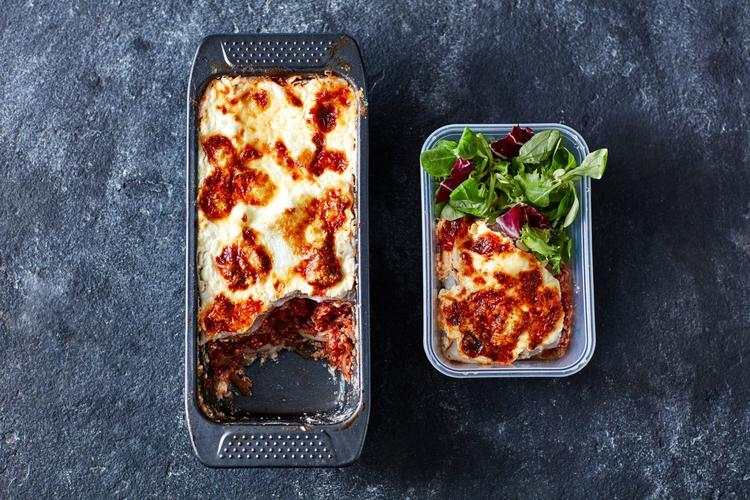

Low-Carb Loaf Tin Lasagne

Description
Craving lasagne, but don’t want to make a whole tray of the stuff? Try loaf tin lasagne. You’ll get 3 easy portions for 3 days’ worth of low-carb, high-protein meal prep.
Ingredients
Serves: 4
- 1 tsp. Coconut Oil
- 1 white onion, coarsely chopped (or 1 tbsp. onion powder)
- 2 cloves garlic, finely chopped (or 1 tsp. garlic powder)
- 1 tbsp. dried oregano
- 350g turkey mince
- 600g chopped tomatoes or tomato passata
- 300g lasagne sheets
- 1 courgette
- 1 tsp. sea salt and black pepper
- 400g cottage cheese
- 3 egg whites
- 100g low-fat cheese (grated)
Steps
- First, make your turkey ragu. Add the coconut oil to a pan on a medium to high heat. Add the onion and sauté for 3-4 minutes, then add the garlic and sauté for a further 2 minutes (if you’re using the powdered versions, add them after the next step).
- Next, add the turkey mince and break it up a little using a spatula, then allow it to brown for 3-4 minutes, stirring occasionally. Stir in the oregano, ½ tsp. salt and pepper and the tomatoes and simmer on a low heat for 10 minutes.
- While you’re waiting, whisk cottage cheese and egg whites together in a bowl using a fork with the remaining salt and pepper. Set aside. Preheat the oven at 200°C or 180°C for fan-assisted.
- Now prepare your courgette and lasagne sheets. Use a vegetable peeler to slice the courgette lengthways to get long slices. Wash the lasagne sheets under cold water in a colander.
- Once the turkey ragu is ready, it’s time to make up the lasagne. Start with a layer of courgette sheets for easy removal once cooked. Then alternate between the ragu, cheese sauce, lasagne sheets, and courgette. Finish with a layer of lasagne, then cheese sauce, then sprinkle with low-fat cheese.
- Bake for 15 minutes with foil on, then remove the foil, turn the heat up by 20°C and bake for a further 20 minutes. Once cooked, divide into four meal prep containers, serve with your favourite salad or vegetables and store in the fridge for up to three days.